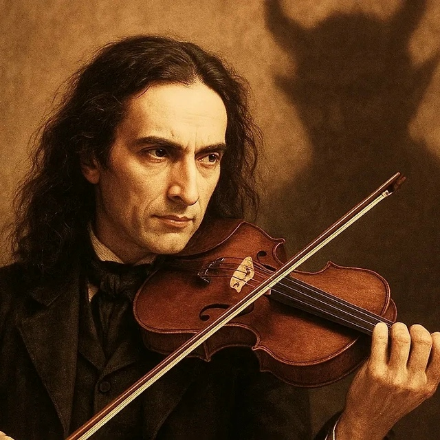

Последние годы жизниВ 1830-х годах состояние здоровья Паганини ухудшилось. Ему становилось всё труднее выступать, однако он продолжал заниматься музыкой. В последние годы жизни композитор находился преимущественно во Франции. Он также интересовался музыкальными инструментами и предпринимательской деятельностью. Никколо Паганини умер 27 мая 1840 года в Ницце в возрасте 57 лет. Его творчество оказало огромное влияние на развитие скрипичного искусства. Из-за слухов, окружавших его жизнь, и религиозных споров организация церковного погребения оказалась затруднена. История его останков впоследствии оказалась долгой и сложной.  Никколо Паганини — легенда мирового скрипичного искусства Музыка Паганини продолжает вдохновлять музыкантов и слушателей по всему миру |